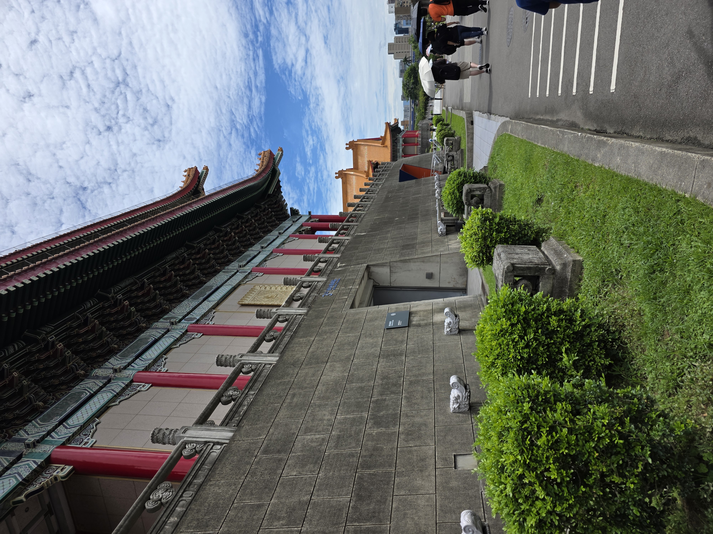
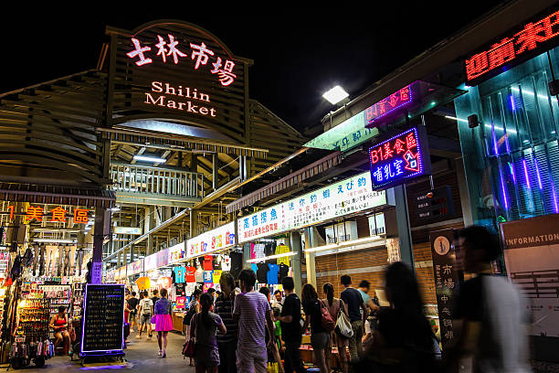
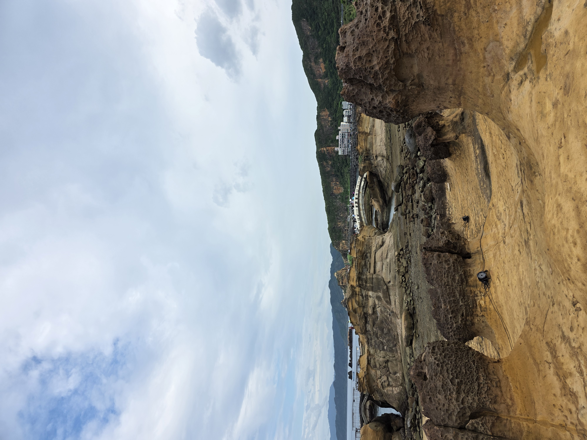
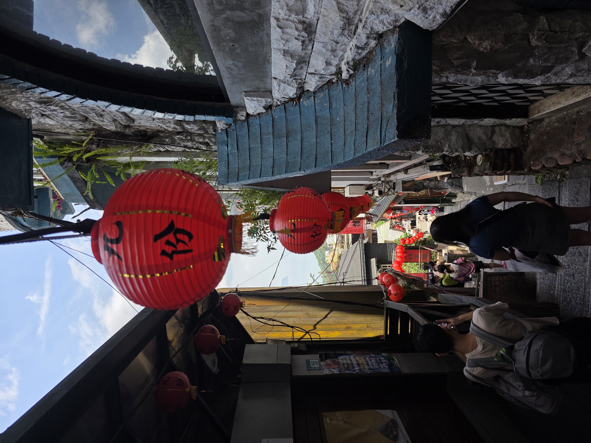
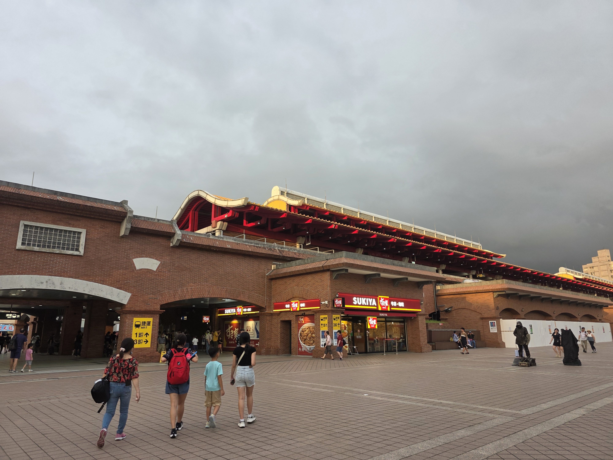
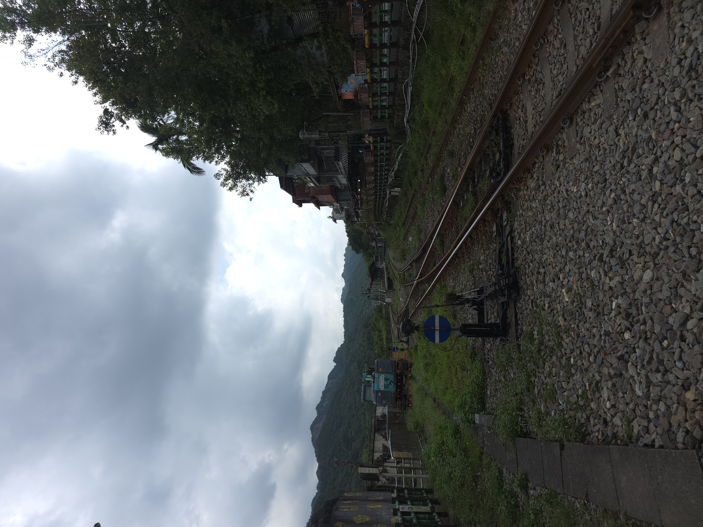
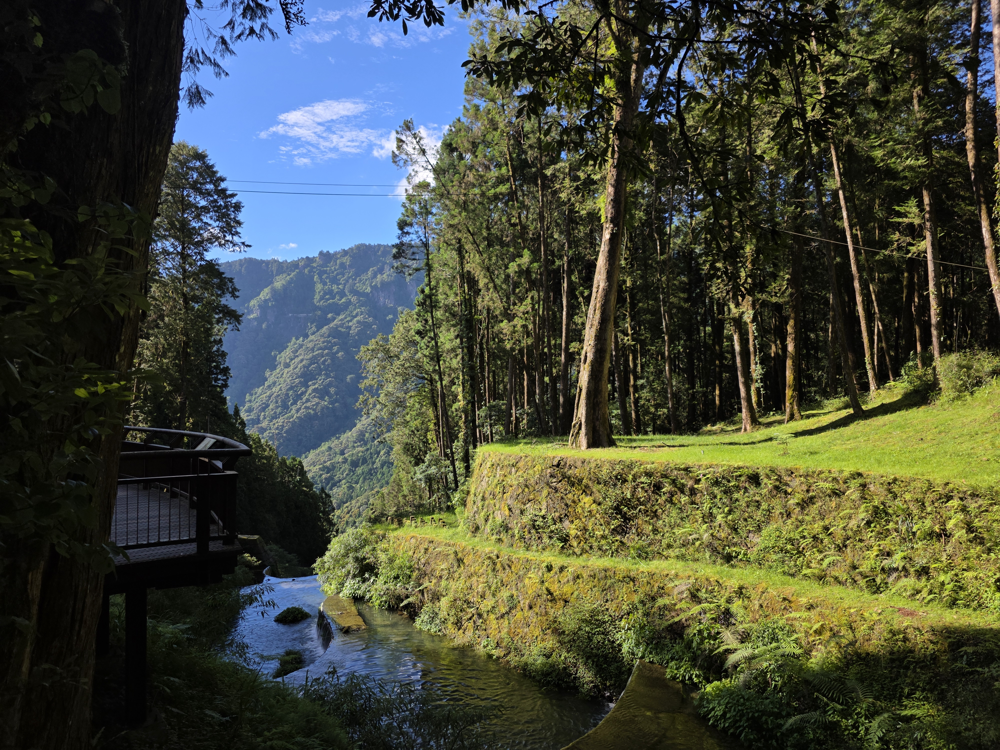
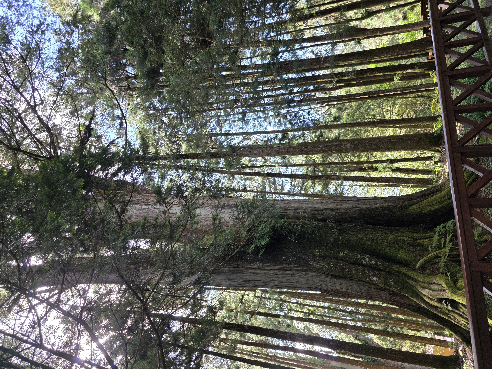
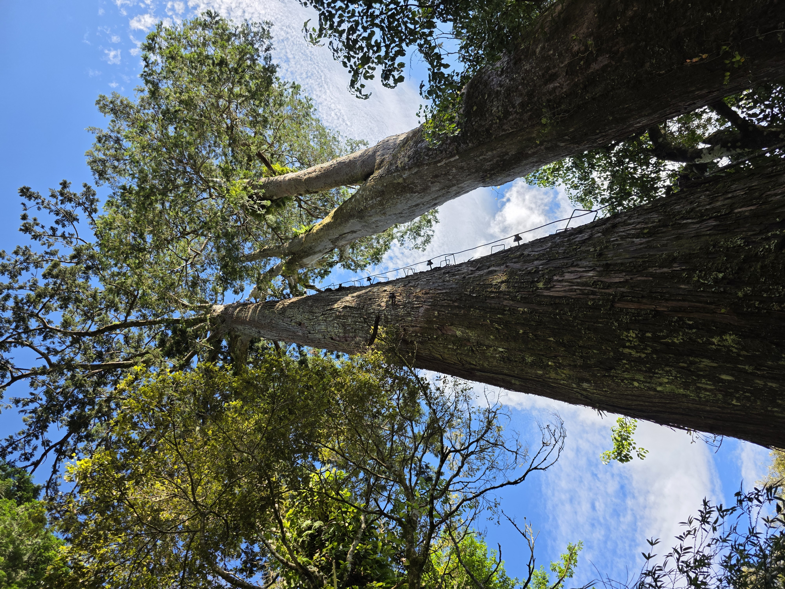
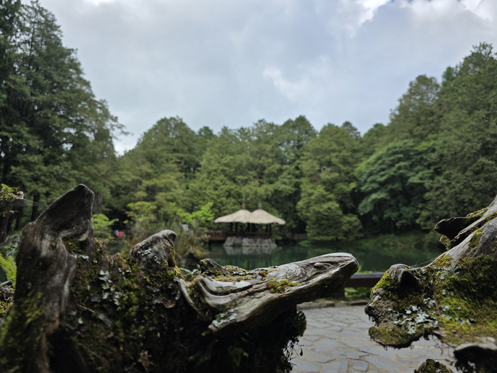

Before You Visit
Taiwan is one of Asia's easiest places to visit, and most travelers need very little preparation. A few simple tips on entry, getting around, and money will help your trip run smoothly.
01. Entry Requirements
Citizens of many countries, including the United States and the United Kingdom, can visit Taiwan without a visa for short stays of up to 90 days, but the rules depend on your passport, so check the Bureau of Consular Affairs website before you book. Your passport generally needs at least six months of validity when you arrive. All visitors also complete a free online Taiwan Arrival Card before travel, so check the site shortly before departure for the current timing. It's also worth keeping proof of onward travel and your accommodation details easy to find.
02. Getting Around
Taiwan is easy to get around. In Taipei, the MRT is fast, clean, and clearly signed in English, and an EasyCard, a rechargeable tap card sold and topped up at stations and convenience stores, works on the metro, buses, and bike share. For longer trips between cities, the High Speed Rail connects Taipei with major cities along the west coast, and it is worth booking ahead for weekends and holidays. Day trips to places such as Jiufen, Shifen, and Tamsui are reachable by train, metro, and bus. Most visitors reach Alishan by way of Chiayi and continue by bus. Chiayi has separate high-speed rail and regular rail stations, so check which one you need, allow plenty of time, and confirm current schedules before you go.
03. Money & Connectivity
Unlike in mainland China, Taiwan does not block Google Maps, Instagram, and similar apps, so your usual apps work as normal. For data, buy a prepaid tourist SIM at the airport or install a travel eSIM before you fly. Carry some New Taiwan dollars: hotels, department stores, and chain stores usually accept international cards, but night markets, small restaurants, and many rural businesses prefer cash, and ATMs are easy to find. Apple Pay and Google Pay work at many shops, while Alipay is not widely accepted, so you do not need to set it up for Taiwan.
Taipei
Ximending District

Explore Taipei's energetic pedestrian district, known for its shops, street food, entertainment, and youth culture.
Guandu Temple
Visit this historic riverside temple, admired for its colorful architecture and peaceful views over the Tamsui River.
Chiang Kai-shek Memorial Hall

Discover the grand memorial hall, gardens, and changing of the guard at this iconic Taipei landmark.
Taipei 101
See the city from Taipei 101's observation decks and explore the shops and dining around the landmark skyscraper.
National Palace Museum
Browse an extensive collection of Chinese art and artifacts spanning thousands of years of history.
Shilin Night Market
Sample Taiwanese street food and browse clothes, souvenirs, games, and local snacks in one of Taipei's best-known night markets.

New Taipei City
Yehliu Geopark

Walk along the coastal landscape to see distinctive sandstone formations, including the famous Queen's Head.
Jiufen Old Street

Wander through Jiufen's narrow lanes of tea houses, local snacks, souvenir shops, and atmospheric hillside views.
Tamsui Old Street

Enjoy waterfront views, traditional snacks, sunset scenery, and the lively shops along Tamsui's historic streets.
Shifen Old Street

Visit the railway-side old town and release a sky lantern while enjoying the area's shops and nearby waterfalls.
Alishan Township

Xianglin Giant Tree

Visit the towering Xianglin Giant Tree, an iconic ancient red cypress surrounded by Alishan's lush forest landscape.
Giant Tree Cluster

Explore the Giant Tree Cluster, a scenic forest trail featuring an impressive group of massive old-growth trees.
Sister Ponds

Enjoy a peaceful walk around the Sister Ponds, two neighboring forest pools known for their calm waters and natural scenery.